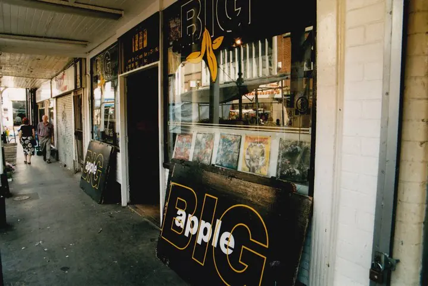
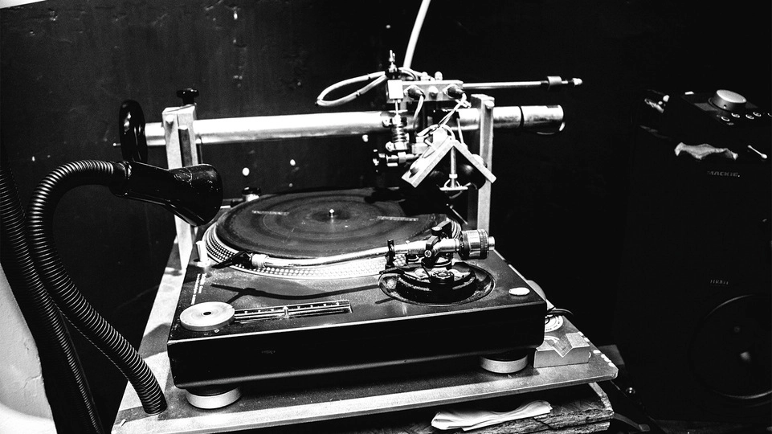
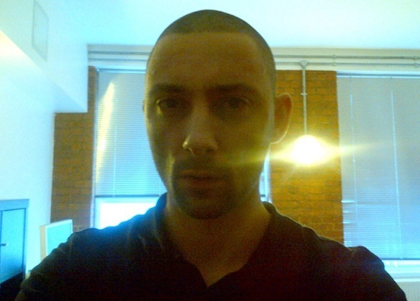
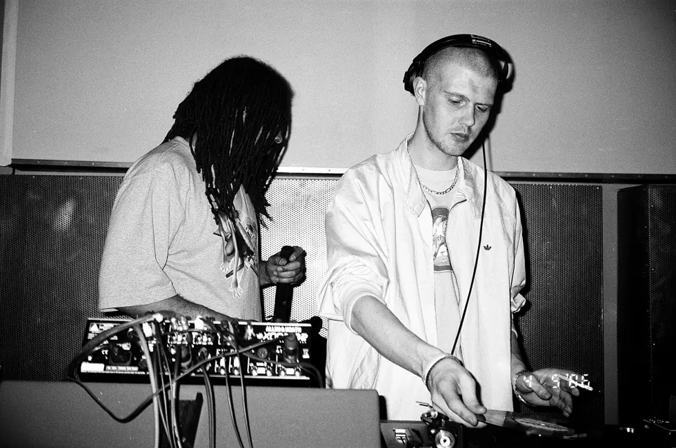
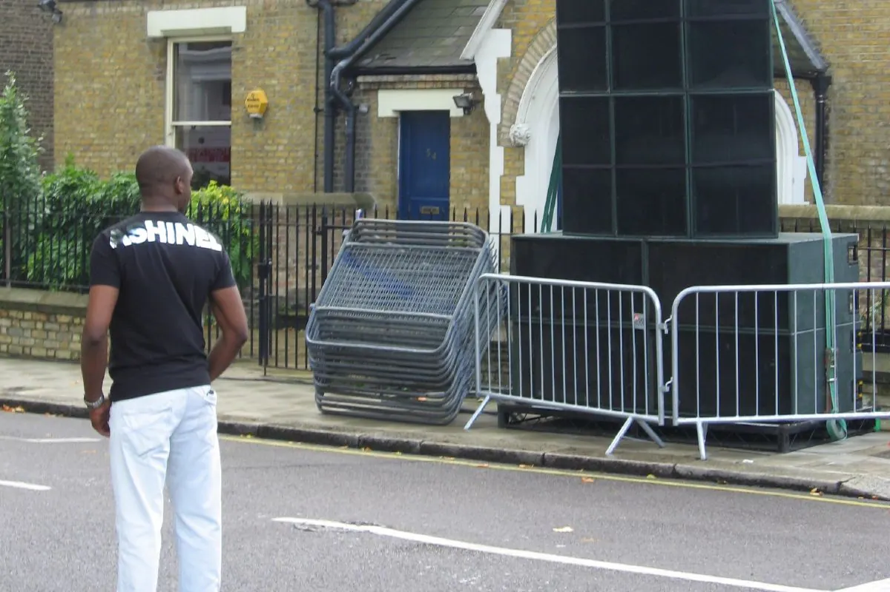

Dubstep guide
What is dubstep?
One word covers two very different musics. How a sound built in a Croydon record shop split in half, and what happened to the version that never went away.
Two answers to the same question.
Search for dubstep and you will find two answers that contradict each other. One describes patient, half-speed music built around bass you feel in your chest. The other describes the loudest thing on a festival main stage. Both are correct, both are called dubstep, and the distance between them is the most interesting thing about the genre.
This guide covers where the sound came from, how it is built, what happened when it split, and the versions of it that never stopped.
Origins
Croydon, Big Apple and a sound with no name.
Croydon is not where anyone would set a story about the future of dance music. Mala described the place he grew up in without decoration: "I remember growing up and thinking that the sky was grey, the streets were grey, and the buildings were grey." The town sits at the southern edge of London, close enough to matter, far enough to be left alone.
What Croydon had was a record shop. Big Apple Records sold garage and hardcore to a small local crowd, and by the early 2000s the people behind the counter and the people loitering in front of it were the same people making the records. Hatcha worked there. So did Hijak, and so did a teenage Skream. Mala, Loefah, Coki and Benga all had early releases on the shop's label, which launched in 2002 with Artwork's "Red".

Nobody in that shop was making dubstep, because the word did not exist yet. They were making dark garage, or 2-step with the vocals stripped out, or something nobody had a name for. Coki's response to first hearing what Skream and Benga were doing was not a genre classification: "Rahhhh, I like this, but what the fuck is it?"
The name arrived from outside the room. It is usually credited to Neil Jolliffe of Ammunition Promotions, and it reached print when Martin Clark wrote about the sound in XLR8R in 2002. The label was attached to music that already existed. That order matters, and most retellings reverse it.
None of this began in Croydon in the deeper sense. The idea that a record is a physical event, that bass is something a room does to your body rather than something a speaker plays, arrives in south London through Caribbean sound-system culture, through dub, through decades of Jamaican practice reworked by British children of that migration. Dubstep did not invent bass weight. It inherited it, and the wider inheritance is the subject of the bass music guide.
How dubstep is built: 140 BPM, half-time and dubstep bass.
The technical description is simple enough to be worth knowing. Dubstep runs between roughly 138 and 142 beats per minute, and almost everything is written at 140. Loefah described the working method plainly: "We all started writing bassline music at around 138BPM, then meeting up on Fridays and playing them to each other."
What matters is what happens to the drums at that tempo. Instead of a kick on every beat, the kick lands on the first beat and the snare on the third, which leaves an enormous gap between them. Count the hi-hats and the track is fast. Follow the kick and snare and it moves at half that speed, around 70. That half-time relationship is the single most important structural fact about the genre. It is why dubstep can be patient and urgent at the same time, and it is the same trick that connects it to breakbeat and to jungle, where the drums do the opposite and fill every available space.
Into the gap goes the bass. Dubstep bass is usually not a bassline in the melodic sense. It is a sustained low frequency, often below what a laptop or a phone can physically reproduce, at a volume where it stops being a sound and becomes a condition of the room. This is why most early dubstep sounds thin and empty on small speakers. That is not a flaw in the records. They were made for systems that could move air.
The other technique worth naming is the wobble. Run a low-frequency oscillator over a filter and the bass note pulses instead of holding, which produces the rhythmic warping that most people can identify even if they cannot name it. In the original sound the wobble was one device among many. In the American variant it became the point.
FWD>>, DMZ and the economics of a dubplate.
A scene needs somewhere to happen. FWD>> started in 2001 at the Velvet Rooms and moved in 2005 to Plastic People, a Shoreditch basement holding about two hundred people and a sound system disproportionate to the space. Sarah Lockhart programmed the night and ran Tempa; Ade Fakile ran the club itself. In January 2006 Mary Anne Hobbs put the sound on BBC Radio 1 with a broadcast called "Dubstep Warz", and two hours of national radio did what four years of basements had not.
The usual telling of this story is a list of male producers. Oris Jay corrected it in one sentence: "If it weren't for Sarah Lockhart and Mary Anne Hobbs, there wouldn't be any of this." The people who built the infrastructure are not the people whose names ended up on the records.
Getting music into a club was its own problem. Before a track was released, and often instead of releasing it at all, a DJ would have it cut to acetate. A dubplate cost thirty or forty pounds. The discs were made from master lacquers that had failed quality control, drilled a second time and sold at a discount, and they survived around fifty plays before the grooves gave out. DJ Hype described the price as a filter: if you are paying to cut a track, you make certain the track is worth cutting.

Much of that cutting happened at Transition Mastering, where Jason Goz worked across jungle, garage, grime and dubstep in turn. He cut plates at a discount for a fifteen-year-old Benga who was saving his dinner money. He also refused to cut panned basslines, insisting on mono, because bass that sits in one speaker collapses on a club system. His rule for the entire process was six words: "If you get the frequency right, everything else is filler."
Scarcity shaped the music rather than merely surrounding it. Loefah: "For a time, there were maybe 50 dubstep tracks in the whole world. If five of them are mine, I'm not just going to chuck them out there."
DMZ was where all of it arrived at once. Mala, Coki and Loefah started the night on 5 March 2005 at Mass, the club inside St Matthew's Church in Brixton, with Sgt Pokes on the microphone. It ran every other month, eleven at night until seven in the morning, under a slogan nobody in the room could miss: meditate on bass weight. Loefah described the experience without romance: "You got hit by this wall of bass and loads of sweaty people who didn't actually give a fuck."
The first birthday, on 4 March 2006, is the night people still describe. By the accounts collected in VICE's oral history of the scene, the queue outside was long enough that the event moved to a larger room partway through, during Joe Nice's set, and an unreleased Coki track was rewound five times before anyone allowed it to play to the end, while Coki stood in a corner smoking, nowhere near the decks. Joe Nice on what the room looked like: "You have grown-ass men jumping up and hugging each other."
By 2007 the music had reached places nobody had planned for. Burial's "Untrue" was nominated for the Mercury Prize while its maker stayed anonymous. Dubstep turned up in "Children of Men". The records were still being cut to acetate in a room in south London, and they were also on national television.

2010 to 2012
How one word came to mean two things.
This is usually where the story becomes a complaint about Americans ruining something. That version does not survive contact with the evidence, and the evidence comes from inside the scene.
Start with the record. When Dazed listed the five tracks that define brostep, the first was not by Skrillex. It was Coki's "Spongebob", made by one half of Digital Mystikz, a founder of DMZ, the deepest possible source. The harder, more aggressive direction was not imported. It was already in the room, made by one of the people who put "meditate on bass weight" on the wall.
Then the commission. When fabric went looking for a dubstep mix CD, several established figures in the scene turned it down before Caspa and Rusko accepted, according to the same oral history. The record that introduced dubstep to a general audience was made by the two people willing to make it. Some of those who later objected to how the genre was represented had been offered the microphone first.
Skrillex released the "Scary Monsters and Nice Sprites" EP in 2010 and moved the weight from sub-bass into distorted mid-range, where a festival field can actually hear it. The result was enormous. At the 2012 ceremony he won three Grammy awards, including Best Dance Recording and Best Dance/Electronica Album. It also did something the London scene had never managed: it made the music legible to people who had never heard of Croydon.
Rusko, whose "O.M.G!" appeared the same year, did not blame anyone else. He told BBC 1Xtra: "Brostep is sort of my fault, I took it there and now everybody else has taken it too far." Nobody knows who coined the word brostep, and the publications that use it most freely do not claim to know. The Guardian called the result "blindingly obvious, lowest common denominator electro".
The tension was not only about aesthetics. By one account in the same oral history, established drum and bass artists approached young dubstep producers at the Winter Music Conference in 2006 and 2007, encouraging division inside the newer scene. A genre that had spent five years defining itself against garage found itself being fought over by a genre it had never claimed to belong to. The wider chronology of these arguments, and how they sit inside four decades of British club music, runs through the UK electronic music guide.
Bristol: the line that never broke.
While the argument about dubstep's soul played out in public, a different version of the music continued in Bristol, largely uninterested in the debate.
Bristol had sound-system culture long before dubstep and did not need London to explain bass weight to it. Pinch founded Tectonic there in 2005, and the label has run for two decades on the assumption that the deep, dub-facing version of this music is not a historical period but an ongoing practice. What came out of the city was slower, stranger and more indebted to dub and techno than to garage.
The producers most often named as the deep side today come substantially from that lineage: Kahn, Commodo, Gantz and the wider Bristol circle. When people say dubstep never died, this is usually what they are pointing at, and it has run continuously since the middle of the 2000s. Deep Medi Musik, Mala's label, held the same line in London.
Berlin: dubstep meets techno.
The third city dubstep took root in is the one almost every history skips.
Kode9 played his first Berlin show in 2002, booked by Tricky D. From 2004 the Grime Time series at WMF brought London grime and dubstep to Berlin audiences. In 2006 FWD>> ran nights at Raumklang with Skream, Kode9 and Loefah, and Freak Camp threw its first party in a bank vault. By 2008 Sub:Stance had launched at Berghain, and the organisers found fifteen hundred people wanting to attend a dubstep night inside a techno institution.

Berlin did not copy London. Hard Wax, the record shop that had anchored the city's techno for two decades, became the bridge, and what came out of it was a hybrid: the space and repetition of Berlin techno carrying UK bass weight. Berlin is a fairly insular scene, and the insularity is exactly why the result sounded like Berlin rather than like an import.
The subgenres and what they actually mean.
Terminology is where most dubstep arguments start, so it is worth setting the terms out plainly.
Deep dubstep is not a subgenre invented later. It is the original sound, and the word deep was attached retrospectively to distinguish it from what came after: patient, spacious, dub-facing, built on sub-bass rather than mid-range aggression.
| Term | Roughly when | What it means | Relationship to the original |
|---|---|---|---|
| Dubstep (original, later called deep) | 2002 onward | 140 BPM, half-time drums, sub-bass, space | The source |
| Brostep | 2010 onward | Distorted mid-range, festival dynamics, aggressive drops | Same tempo and drum pattern, opposite frequency priority |
| Riddim | Mid 2010s onward | Minimal, repetitive, heavily triplet based | Descends from brostep, not from the original sound |
| Melodic dubstep | Early 2010s onward | Emotional chord work, trance and progressive influence | Borrows the tempo, discards the darkness |
| Chillstep | Early 2010s onward | Soft, ambient, vocal led | A streaming category more than a scene |
| Future garage | Late 2000s onward | Garage swing, dubstep sound design, restrained | A sibling developing in parallel |
| Post-dubstep | 2010 onward | Producers who used the vocabulary and left | A label applied later by writers, not a scene anyone joined |
Where dubstep is now.
There is no single revival, and any account that promises one is simplifying.
Several things are true at once. The deep lineage in Bristol and around Deep Medi never stopped and therefore cannot be revived. DMZ still runs, though its tenth anniversary in 2015 produced a real argument when tickets reached thirty pounds and a scene raised on eight pound entry said so at volume. "Gone are the days it was £8" is a complaint about ticket prices and also about what happens when an underground institution survives long enough to become an institution.

Mala went somewhere else entirely, recording with Cuban and Peruvian musicians rather than defending a genre boundary. The American side kept its festival circuit and its own economics. And the techniques themselves, half-time drums at 140, sub-bass as the lead voice, space treated as an instrument, have travelled far past anything anyone calls dubstep, into records by producers who would not describe themselves as dubstep artists.
Dubstep stopped being a scene and became a set of tools. Genres that work tend to end up there.
Dubstep FAQ.
Is dubstep EDM?
It depends which dubstep. The American variant from 2010 onward sits comfortably inside what the US market calls EDM, and shares its festivals, its production values and its audience. The original south London sound predates that category and has very little to do with it. Both are called dubstep, which is where most of the confusion comes from.
Is Skrillex dubstep?
He makes music at dubstep tempo with dubstep drum patterns, so by the technical definition, yes. He also inverted the genre's central priority, putting the weight into distorted mid-range instead of sub-bass. Whether that still counts as dubstep is a question about values rather than facts, and the scene has never agreed on an answer.
What BPM is dubstep?
Around 140 beats per minute, usually between 138 and 142. Because the kick and snare are spread across the bar, it feels closer to 70, which is why dubstep mixes comfortably with much slower music.
Who invented dubstep?
No single person. The sound came out of a group in and around Big Apple Records in Croydon in the early 2000s, including Hatcha, Skream, Benga, Mala, Coki and Loefah, alongside Horsepower Productions and others working across south London. The name is generally credited to Neil Jolliffe of Ammunition Promotions and reached print through Martin Clark's 2002 piece in XLR8R.
When did dubstep start?
The music was being made from around 2000 to 2002, the name appeared in 2002, FWD>> began in 2001 and DMZ started in March 2005. There is no single starting date, which is normal for a scene that named itself after it already existed.
Sources.
- VICE: The oral history of dubstep
- Museum of Youth Culture: A brief history of early dubstep
- Dazed: What is brostep, in five key tracks
- Clash: Nuff wheel ups, exploring dubplate culture
- Boiler Room: Dubstep from Croydon to Kreuzberg and beyond
- FACT: Ten years of DMZ and Dub War
- DJ Mag: How Big Apple Records became the birthplace of dubstep
Continue reading
Read next.
 A01Guide / Breakbeat / ~22 min
A01Guide / Breakbeat / ~22 minBreakbeat Music: History, Sound and Evolution
From funk breaks and pirate radio to cracked VSTs and modern bass hybrids.
Read article → A02Guide / Jungle / ~18 min
A02Guide / Jungle / ~18 minJungle Music: From Roots to Revival
Pirate radio, dubplates, MC energy and the global return of a distinctly Black British sound.
Read article → A03Timeline / UK music / ~27 min
A03Timeline / UK music / ~27 minThe Evolution of UK Electronic Music
Ten sounds that travelled from regional underground scenes into global culture.
Read article → A04Guide / Bass music / ~20 min
A04Guide / Bass music / ~20 minWhat Is Bass Music? History, Genres and Essential Tracks
A global history connecting Jamaica, Miami, Britain, Los Angeles, Chicago, Durban and today’s hybrid club culture.
Read article →